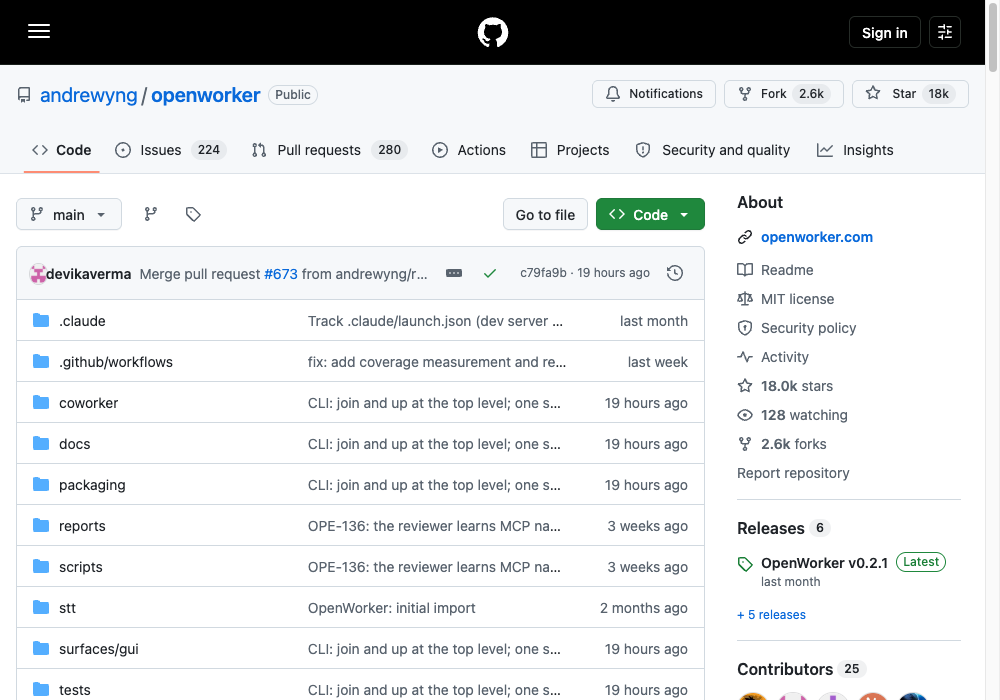
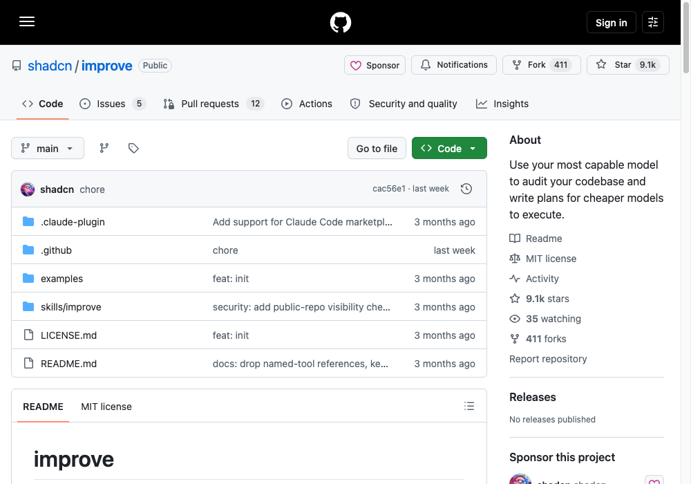
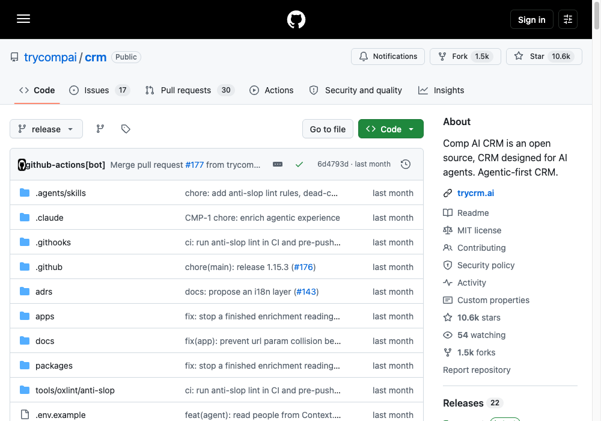
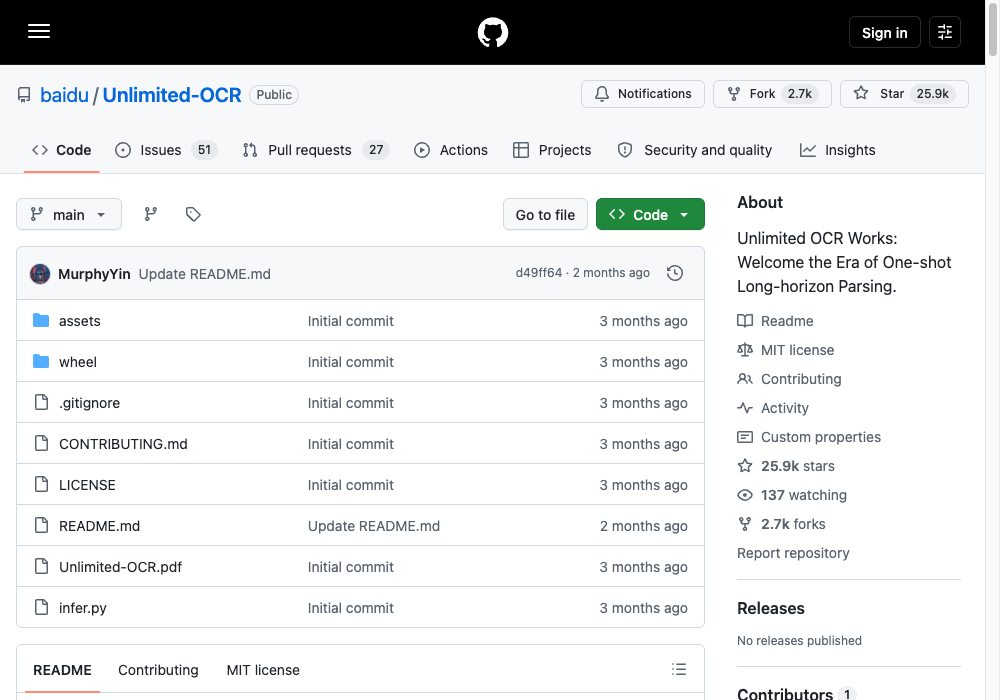
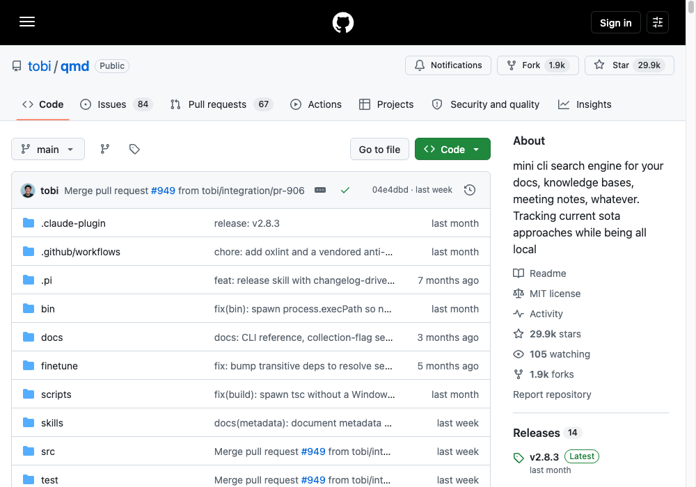
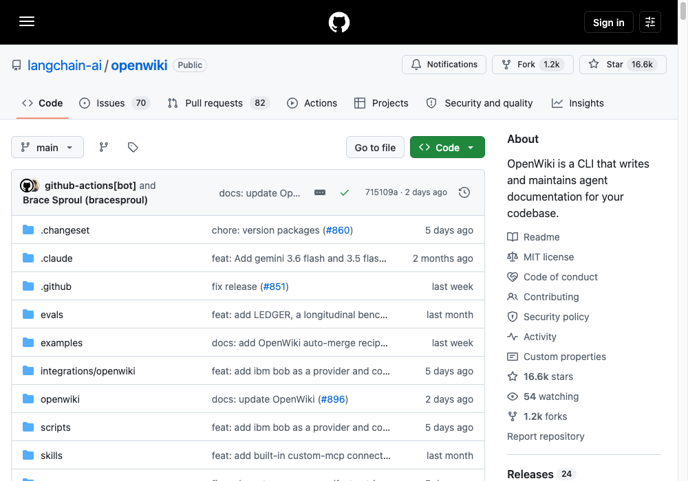
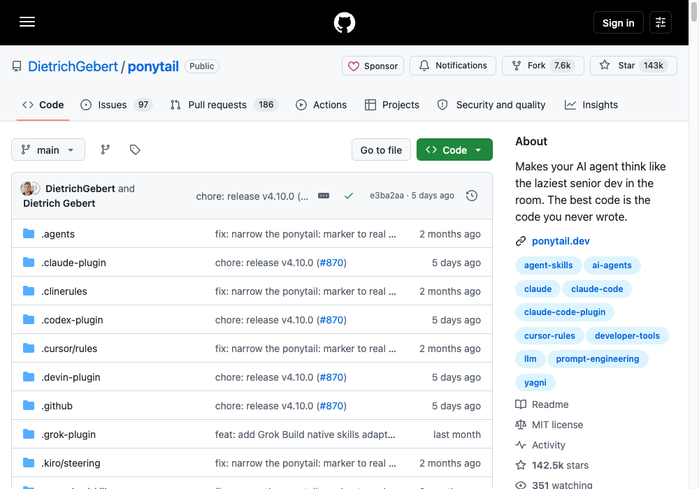

You don't need a team to run a $100K business.
Seven open-source repos that cover the roles a small company usually hires for — assistant, team lead, sales, data entry, research, docs, and the senior dev who tells you not to build it.
About the salary figures: they're US market averages for the equivalent role, not quotes for your market. Several match published averages exactly — executive assistant, technical writer and data entry clerk are Glassdoor and Built In's national numbers to the dollar. Treat them as a ballpark for what the job costs, not a promise of what you'll save.
#1: openworker
The assistant. ≈ $84K a year

Andrew Ng's team shipped a desktop coworker that hands back finished work rather than chat — a written brief, a triaged inbox, a fixed calendar. It's local-first: the agent loop, your conversations, connector tokens and model keys all stay on your machine.
The catch: there's no one-line installer yet. You run it from source, and you'll need Python 3.10+, Node 20+ and the Rust toolchain for the desktop shell.
git clone https://github.com/andrewyng/openworker cd openworker # one-time bootstrap — creates the Python venv at .venv bash packaging/setup_dev_env.sh # start the local agent server .venv/bin/openworker-server --cwd ~/some/project --port 8765
# second terminal — the UI cd surfaces/gui npm install npm run dev # browser UI # npm run tauri dev # or the full desktop app
#2: improve
The team lead. ≈ $152K a year

Your best model audits the whole codebase and writes the plan; cheap models execute it. That's a lead engineer's job description, running on a schedule. Plans land in plans/ as plain markdown, so any agent — or human — can pick them up.
npx skills add shadcn/improve
/improve # full audit -> prioritised findings -> plans /improve quick # cheap pass: hotspots, top findings only /improve security # focused audit (also: perf, tests, bugs) /improve execute 001 # dispatch a cheaper executor, review its work /improve reconcile # refresh the backlog: verify, unblock, retire
#3: Comp AI CRM
The sales hire. ≈ $72K a year

A CRM built so an agent can actually run it, not just store rows in it. It chases the follow-ups and keeps the pipeline current while you're doing something else.
git clone https://github.com/trycompai/crm.git && cd crm bun install docker compose up -d # Postgres on :5432 bun run db:deploy # apply migrations bun run db:seed # optional: a believable pipeline to look at bun run dev
#4: Unlimited-OCR
The data clerk. ≈ $40K a year

Baidu open-sourced document parsing with no length ceiling. Point it at the stack of invoices, contracts and scans nobody wants to type up and it reads all of it in one pass.
The catch: this is a model, not a CLI. It expects an NVIDIA GPU — the easy path is the prebuilt vLLM image rather than assembling the Python environment yourself.
# default (CUDA 13.0) docker pull vllm/vllm-openai:unlimited-ocr # Hopper GPUs (CUDA 12.9) docker pull vllm/vllm-openai:unlimited-ocr-cu129
#5: qmd
The researcher. ≈ $66K a year

One command that searches every doc, knowledge base and meeting note you own, entirely on your machine. Written by Shopify's CEO because he needed it.
npm install -g @tobilu/qmd # or: bun install -g @tobilu/qmd
qmd collection add ~/notes --name notes qmd collection add ~/Documents/meetings --name meetings qmd context add qmd://notes "Personal notes and ideas" qmd embed # generate embeddings qmd search "project timeline" # fast keyword search qmd vsearch "how to deploy" # semantic search qmd query "quarterly planning process" # hybrid + reranking
#6: openwiki
The tech writer. ≈ $78K a year

It writes the documentation for your codebase and then keeps it current as the code moves — the job everyone hires for and nobody keeps up with. Needs Node 22.22.0 or newer.
npm install -g openwiki openwiki --init # pick provider, key, model; writes docs to openwiki/ openwiki --update # refresh from changes since the last run
There are ready-made CI jobs for GitHub Actions, GitLab CI and Bitbucket Pipelines that open a docs PR whenever the wiki changes — that's the part that makes it stick.
#7: ponytail
The senior dev. ≈ $148K a year

Makes your agent think like the laziest senior in the room — the one who talks you out of building the thing. The most-starred repo in this guide by a distance, and the best code is still the code you never wrote.
/plugin marketplace add DietrichGebert/ponytail
/plugin install ponytail@ponytail
Those are two separate prompts — the install doesn't work if you send them together. For Codex: codex plugin marketplace add DietrichGebert/ponytail then codex plugin add ponytail@ponytail. Needs node on your PATH for the lifecycle hooks.
The whole roster.
One row per hire you didn't make.
| Role | Repo | Command | Stars |
|---|---|---|---|
| Senior dev ≈ $148K | ponytail DietrichGebert | /plugin marketplace add DietrichGebert/ponytail | 143K |
| Researcher ≈ $66K | qmd tobi | npm install -g @tobilu/qmd | 30K |
| Data clerk ≈ $40K | Unlimited-OCR baidu | docker pull vllm/vllm-openai:unlimited-ocr | 26K |
| Assistant ≈ $84K | openworker andrewyng | git clone https://github.com/andrewyng/openworker | 18K |
| Tech writer ≈ $78K | openwiki langchain-ai | npm install -g openwiki | 17K |
| Sales ≈ $72K | crm trycompai | git clone https://github.com/trycompai/crm.git | 11K |
| Team lead ≈ $152K | improve shadcn | npx skills add shadcn/improve | 9K |
A repo is not a hire.
Every tool here removes work, and none of them removes judgement. The salary numbers are what the role costs on the open market, not what you'll bank — you're trading a salary for your own time spent running these, plus model costs on the ones that call an API. Two of the seven (openworker, Unlimited-OCR) need real setup before they do anything at all. Start with the one role that's actually your bottleneck rather than installing all seven.